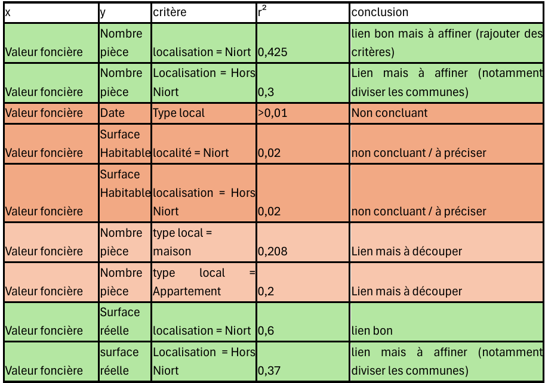
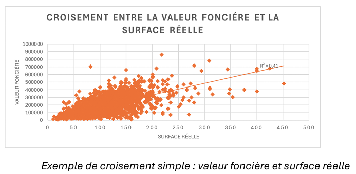
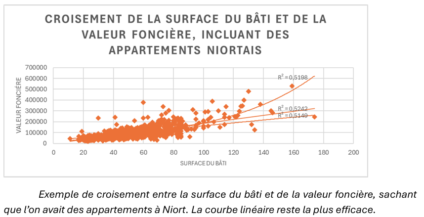

📊 SAÉ — Régression sur des données réelles
Création d'un script R pour estimer la valeur des biens vendus dans la région Poitou-Charentes. Utilisation de la segmentation de la population sur différentes variables (qualitatives et/ou quantitatives), puis régression (linéaire, exponentielle, etc.) sur les sous-populations.
L'une des façons d'exploiter les données est de faire des prédictions grâce à des outils statistiques, entre autres. Ce projet avait pour but de nous faire découvrir la beauté des régressions (linéaire, exponentielle, puissance, racine). Nous disposions de données sur les biens vendus dans le Poitou de 2021 à 2025, réparties en 3 jeux de données différents (train, test, to_predict). L'objectif était de créer des segmentations et des régressions pour prédire les valeurs du 3ème jeu de données le plus précisément possible. Ce travail était à réaliser par groupe de 2.
La première étape a été de réaliser une analyse exploratoire avec Excel sur les données contenues dans le fichier « Train » (premier jeu de données), afin de déterminer quelles variables avaient le plus d'impact sur les autres et quelles segmentations permettaient d'améliorer les régressions (utilisation des nuages de points et de la droite de régression automatique d'Excel).
Une fois les données comprises, nous avons pu passer sur R afin de tester des segmentations et des modèles de régression sur les fichiers Train et Test (les tests de précision ont été effectués au moyen de la métrique « somme des carrés des résidus »). Grâce aux tests, nous avons pu déterminer quelle segmentation était la plus précise. Il a suffi d'appliquer ces modèles et segmentations au fichier to_predict, pour lequel nous ne disposions pas des valeurs des biens (contrairement aux autres jeux de données).
Nous avons réalisé 5 croisements. Bien évidemment, il existe un nombre extrêmement important de critères influençant le prix d'un bien, et ils ne sont pas tous mesurables. De ce fait, notre modèle était peu précis, avec une forte marge d'erreur. Nous avons tout de même réussi à produire le 2ème meilleur modèle de la promotion.
La principale difficulté a été de trouver la méthodologie pour tester correctement nos segmentations, ainsi que de les identifier.


